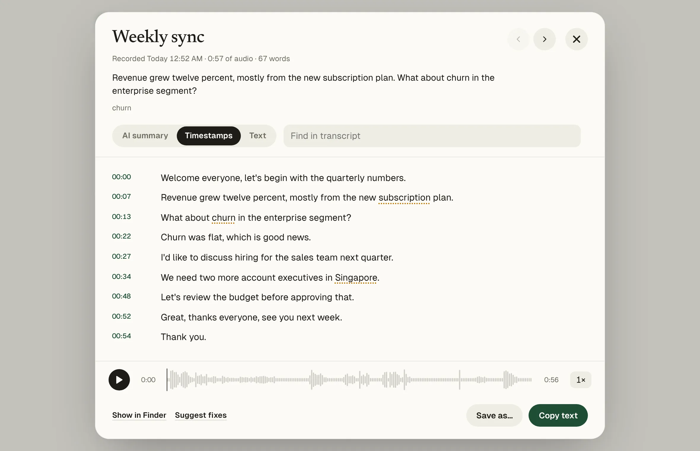

Whisper is OpenAI's open speech recognition model. Running it yourself usually means Python, Homebrew and the command line. Matita packages whisper.cpp, FFmpeg and everything else inside one Mac app, built for Apple Silicon with Metal.
The speech models
| In Matita | Model | Download | Languages |
|---|---|---|---|
| Turbo · Recommended | Whisper large-v3-turbo | 1.6 GB | All the languages in Matita |
| Turbo 8-bit · Fast | Whisper large-v3-turbo, 8-bit | 870 MB | All the languages in Matita |
| Parakeet · Fastest | NVIDIA Parakeet TDT 0.6B v3 | 640 MB | English, French, Spanish, German |
You can choose Korean, English, Japanese, Chinese, French, Spanish or German, or let Whisper detect the language. Matita downloads a model the first time you use it, then works offline.
What Matita adds around Whisper
- Speaker names, with a Speakers view that gathers each person's lines
- Summaries and title ideas with Ollama on your Mac, or with Claude
- Recording from your microphone, and from Zoom, Teams or Meet on macOS 14.2 or later
- iPhone Voice Memos and watch folders, picked up automatically
- Timestamps you can click to play, and words the model wasn't sure about highlighted
- Export to .txt, .srt, Word and Markdown, and notes for Obsidian

Requirements
A Mac with Apple Silicon (M1 or later) and macOS 14 Sonoma or later. About 100 MB for the app, plus the model you choose.
Also on Windows (beta). On 64-bit Windows 10 and 11, Matita runs whisper.cpp on your graphics card through Vulkan when its driver supports it, and on the processor otherwise, which is slower.
Questions
Is this the official Whisper app?
No. Matita is an independent open-source app that runs the openly released Whisper models through whisper.cpp.
Does it use the Mac's GPU?
Yes. whisper.cpp in Matita is built with Metal, so it runs on Apple Silicon's GPU.
Can I use it on an Intel Mac?
Not this version. On a Mac, Matita needs Apple Silicon.
Is there a Windows version?
Yes, in beta, for 64-bit Windows 10 and 11. Recording the other side of calls and iPhone Voice Memos are Mac-only for now.